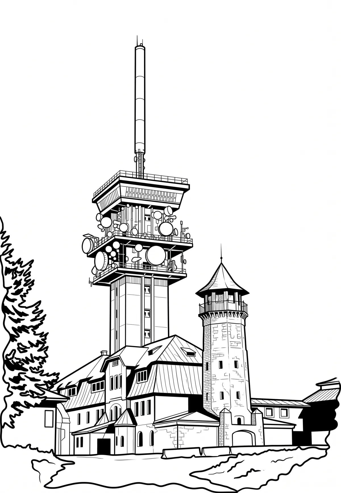

Klínovec
Karlovarský kraj · 1244 m n. m.

přírodní památka · #034
Klínovec (1244 metrů nad mořem, německy Keilberg, dříve též Sonnenwirbel) je hora v severozápadních Čechách, nejvyšší vrchol Krušných hor, nejvyšší bod okresů Karlovy Vary a Chomutov a také Karlovarského a Ústeckého kraje. Jde o čtvrtou nejprominentnější českou horu.